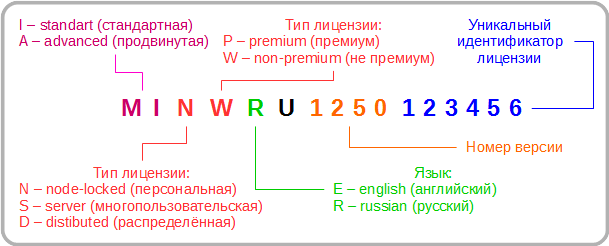

Лицензирование MapInfo и секреты серийных номеров
Статья написана «по мотивам» поста в блоге компании Critchlow – крупнейшего (как они утверждают) ГИС-интегратора в Новой Зеландии.
Такое ощущение, что разработчики MapInfo пробудились от многолетнего летаргического сна и, с энергией Рип ван Винкла, навёрстывают упущенное. За последнее время вышло несколько знаковых обновлений, изменивших не только интерфейс, но и, в чём-то, принципы работы с программой.
Помимо новых инструментов, новых возможностей и перспектив, обновления принесли и новые неожиданные проблемы. Если верить блогам (западным, конечно же, если вы понимаете, о чём я), у пользователей стали массово появляться вопросы о лицензировании при переходе на новые версии MapInfo.
Для того, чтобы понять суть проблемы, надо сначала разобраться с нотификацией серийных номеров MapInfo. Что же скрывают эти буквы и цифры?
Как видно из схемы, серийный номер MapInfo состоит из нескольких групп буквенно-цифровых комбинаций. При этом каждая из групп кодирует ту или иную информацию.
Позиция 1-2 кодирует принадлежность ключа к той или иной программе семейства MapInfo:
- MI – MapInfo Pro;
- MA – MapInfo Pro Advanced (дополнительный модуль для 64-битной версии, превращающий векторную MapInfo Pro в мощную растровую ГИС).
Позиции 3 и 4 кодируют тип лицензии. Так, на позиции 3 могут располагаться следующие кода:
- N (node-locked license) – персональная (одиночная) лицензия, которая позволяет установить MapInfo Professional только на один компьютер;
- S (server license) – серверная (многопользовательская) лицензия, которая позволяет установить MapInfo Professional на неограниченное количество компьютеров;
- D (distribute license) – распределённая лицензия, при которой используется сервер лицензий MapInfo.
На позиции 4 располагается код класса лицензии:
- P (premium) – лицензия, предоставляющая пользователю дополнительные возможности сервисов MapInfo;
- W (non-premium) – ординарная лицензия.
Позиция 5 кодирует язык программы. К примеру:
- E (english) – английский язык;
- R (russian) – русский язык.
Позиция 7-10 кодирует версия программы. К примеру:
- 1500 – MapInfo Pro версии 15 или 15.2;
- 1250 – MapInfo Pro версии 12.5 или 12.5.4.
На позиции 11-16 располагается индивидуальный уникальный код лицензии.
Очевидно, только последние 6 символов являются по настоящему уникальными. Остальные же задают ряд параметров соответствия серийного номера типу устанавливаемой программы. Таким образом, введение пусть и честно приобретённого, но несоответствующего инсталляции серийного номера приведёт к его отторжению.
Косвенным подтверждением вышеизложенного тезиса служит обычный запрос службы технической поддержки MapInfo с просьбой назвать серийный номер установки, по которому уточняется версия программы и её тип.
Таким образом, можно с уверенностью заявлять, что серийные номера и коды активации жёстко привязаны к версии полного релиза MapInfo (11.0x, 12.0x, 12.5x etc). Естественно, серийные номера от одной версии не подойдут к другой версии программы.
Вместе с тем, серийный номер и код активации не содержат, по видимому, информации ни о битности, ни о версиях обновлений MapInfo. Т.е. обновления в пределах одно полного релиза (12.5.2, 12.5.3 etc) можно производить без риска утраты активации. Также можно утверждать, что серийный номер и код активации полного релиза подходят как для 32-битной, так и для 64-битной версии MapInfo:
When will I get my serial number and access code for the 64 bit version?
— A different serial number is not required.
Tom Probert, Editor of "The MapInfo Pro" journal
Когда я получу свой серийный номер и код активации для 64-битной версии?
— Отдельный серийный номер не требуется.
Том Проберт, редактор журнала «The MapInfo Pro»
Крайне маловероятно, что кто-нибудь из отечественных пользователей перепутает серийные ключи (если вы понимаете, о чём я). Но, как известно, нет предела человеческому совершенству. Praemonitus praemunitus.
Источники:
MapInfo Professional Версия 12.5 Лицензирование и активация, ©2014, Pitney Bowes Software Inc.
www.pitneybowes.com
web.pb.com
www.mapinfo.ru
blog.critchlow.co.nz